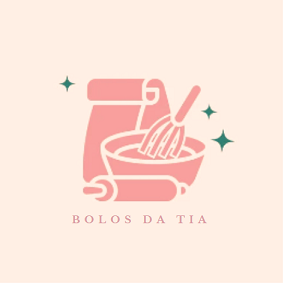

Home
Receitas
Cadastre-se Aqui
Bem-vindo ao site Bolos da Tia
O Melhor lugar para encontrar suas Receitas
Lembre-se: em qualquer doce, o ingrediente mais importante é o amor
Todas as receitas
Receitas Doces
Receitas Salgadas
Categorias
Bolos
Tortas
Doces de festa